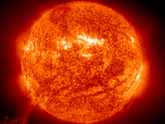

In Brief
Human activities (primarily the burning of fossil fuels) have fundamentally increased the concentration of greenhouse gases in Earth's atmosphere, warming the planet. Natural drivers, without human intervention, would push our planet toward a cooling period.
We Live in a Greenhouse
Life on Earth depends on energy coming from the Sun. About half the light reaching Earth's atmosphere passes through the air and clouds to the surface, where it is absorbed and then radiated upward in the form of infrared heat. About 90 percent of this heat is then absorbed by the greenhouse gases and radiated back toward the surface.
Is the Sun to Blame?

Since 1978, a series of satellite instruments have measured the energy output of the Sun directly. The satellite data show a very slight drop in solar irradiance over this time period. So the Sun doesn't appear to be responsible for the warming trend observed over the past several decades.
Key Greenhouse Gases
Click any gas card below to highlight its molecule in the 3D viewer ↓
Water Vapor
The most abundant greenhouse gas, but importantly, it acts as a feedback to the climate. Water vapor increases as the Earth's atmosphere warms, but so does the possibility of clouds and precipitation.
Carbon Dioxide (CO₂)
A minor but very important component of the atmosphere, released through natural processes and human activities such as deforestation, land use changes, and burning fossil fuels. Humans have increased atmospheric CO₂ concentration by 48% since the Industrial Revolution.
Methane (CH₄)
A hydrocarbon gas produced both through natural sources and human activities, including the decomposition of wastes in landfills and agriculture. It is a far more active greenhouse gas than carbon dioxide, but much less abundant.
Nitrous Oxide
A powerful greenhouse gas produced by soil cultivation practices, especially the use of commercial and organic fertilizers, fossil fuel combustion, and biomass burning.
Chlorofluorocarbons
Synthetic compounds entirely of industrial origin used in a number of applications, but now largely regulated in production and release by international agreement for their ability to destroy the ozone layer.